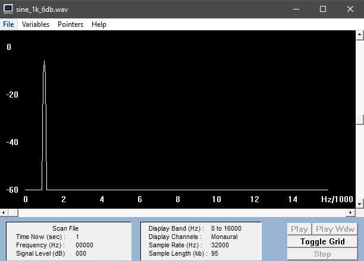
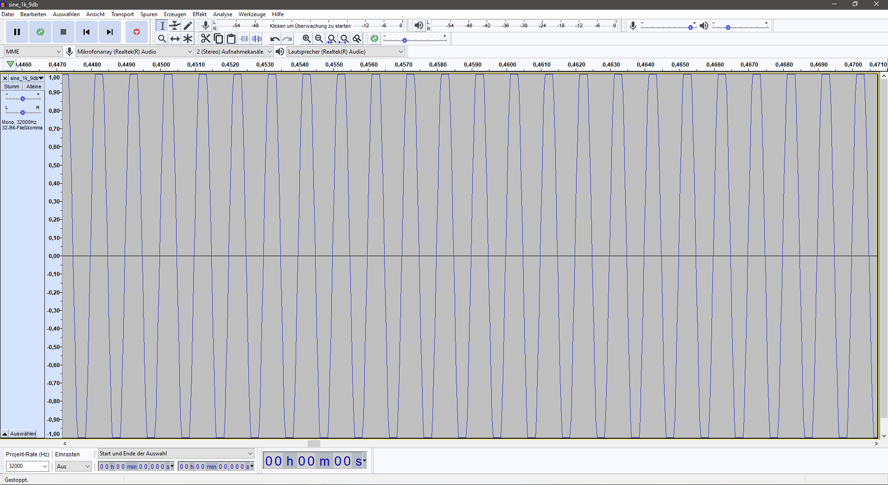
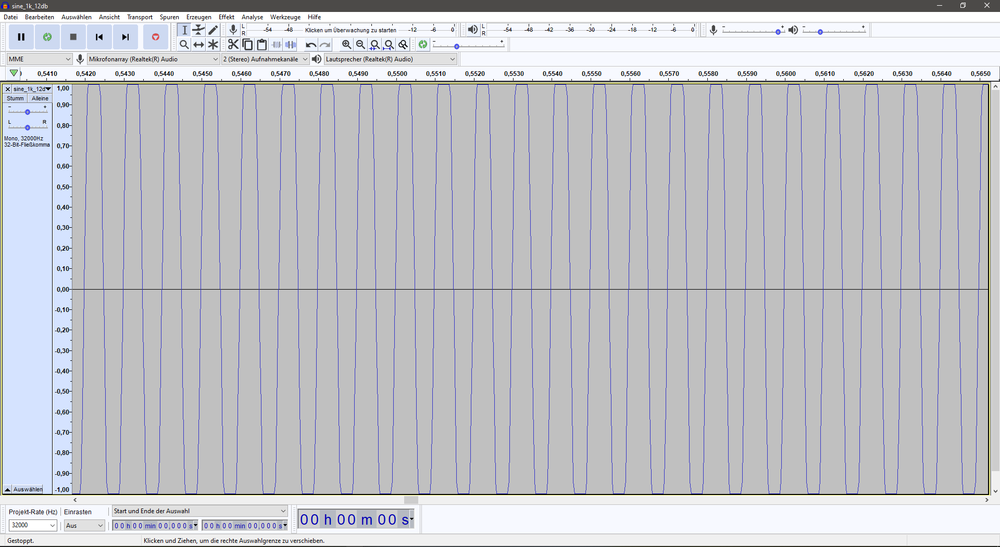
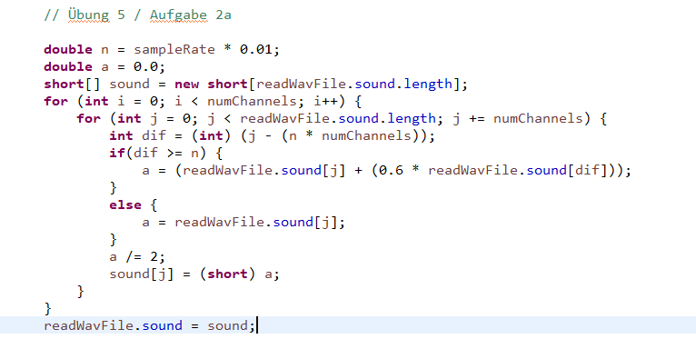

Übung 5
Nr.1 b)
12db Verstärkung (Musik):
15db Verstärkung (Musik):
18db Verstärkung (Musik):
Bei einer Verstärkung um 18db ist eine deutliche Verzerrung zu hören. Wenn man genau hinhört erkennt man bereits bei 15db eine leichte Verzerrung
Nr.1 c)
6db Verstärkung (Sinus):
9db Verstärkung (Sinus):
12db Verstärkung (Sinus):
HIER FEHLT NOCH DIE BERECHNUNG --> VIDEO ZUR ÜBUNG ANSCHAUEN
Nr.2 a)
Original Sprachdatei
10ms Echo
100ms Echo
200ms Echo
Original Musikdatei
10ms Echo
100ms Echo
200ms Echo
Nr.2 b)
N = 44.1 kHz * 10 ms = 441 Samples(Abtastwerte)
N = 44.1 kHz * 100 ms = 4410 Samples(Abtastwerte)
N = 44.1 kHz * 200 ms = 8820 Samples(Abtastwerte)